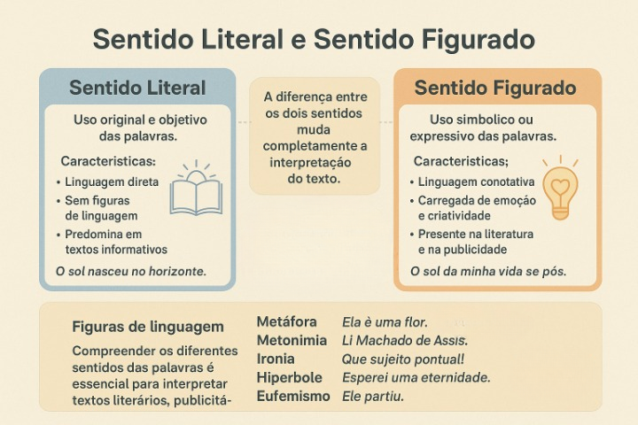

Sentido Literal e Sentido Figurado
Compreender a diferença entre sentido literal e sentido figurado é essencial para desenvolver a interpretação de textos, especialmente na leitura de obras literárias, propagandas e produções do cotidiano digital. Essas duas formas de atribuir significado às palavras estão no centro do estudo da semântica, área da linguística que analisa os sentidos na língua.
O que é sentido literal?
O sentido literal ocorre quando as palavras são empregadas em seu significado original, sem desvios de sentido ou intenções subjetivas. É o uso mais direto e objetivo da linguagem, predominante em textos informativos, científicos e instrucionais.
Exemplo: “O sol nasceu no horizonte.” — aqui, a frase descreve um fato real, sem figuras de linguagem.
O que é sentido figurado?
O sentido figurado aparece quando as palavras são usadas de maneira criativa ou simbólica, com o objetivo de provocar efeitos expressivos, emoções ou novas interpretações. Esse uso é típico da linguagem literária, publicitária e artística.
Exemplo: “O sol da minha vida se pôs.” — a expressão “sol da minha vida” não se refere literalmente ao astro, mas a uma pessoa ou momento importante que deixou de existir na vida do falante.
Figuras de linguagem e construção do sentido figurado
O sentido figurado se manifesta por meio das figuras de linguagem, recursos expressivos que ampliam, intensificam ou transformam o sentido das palavras. Entre as principais estão:
- Metáfora: comparação implícita entre dois elementos diferentes.
Exemplo: “Ela é uma flor.” - Metonímia: substituição de um termo por outro com o qual mantém relação de sentido.
Exemplo: “Li Machado de Assis.” (ou seja, “li obras de Machado de Assis”). - Ironia: expressão de uma ideia contrária à que se quer comunicar.
Exemplo: “Que sujeito pontual!” (para alguém que está sempre atrasado). - Hipérbole: exagero intencional para dar ênfase.
Exemplo: “Esperei uma eternidade.” - Eufemismo: suavização de uma ideia desagradável.
Exemplo: “Ele partiu.” (em vez de “Ele morreu”).
Sentido figurado na literatura e na publicidade
Na literatura, o sentido figurado é um dos principais instrumentos de criação estética. Ele confere emoção, ritmo e profundidade aos textos, permitindo múltiplas interpretações. Poetas e romancistas utilizam metáforas, comparações e símbolos para expressar sentimentos de forma mais intensa e subjetiva.
Já na publicidade, o uso do sentido figurado tem função persuasiva: cria impacto, desperta curiosidade e reforça a identidade de uma marca. Slogans como “Abra a felicidade” (Coca-Cola) ou “O futuro é feito de escolhas” (Bradesco) exemplificam esse uso criativo do sentido figurado para gerar envolvimento emocional com o público.
Atividade sugerida: analisando o sentido figurado no cotidiano
Uma ótima forma de explorar esse tema com os alunos é a análise de textos contemporâneos que fazem uso expressivo da linguagem figurada. Você pode propor:
- Selecionar letras de músicas e identificar expressões figuradas e seus efeitos de sentido;
- Interpretar memes que brincam com ambiguidades e figuras de linguagem;
- Ler poemas curtos e discutir como o sentido literal se transforma em sentido simbólico.
Essas atividades ajudam os estudantes a perceber que o sentido figurado não está restrito à poesia, mas faz parte do modo como nos comunicamos diariamente, seja em mensagens, piadas, slogans ou redes sociais.
Conclusão
Entender a diferença entre sentido literal e sentido figurado é fundamental para ler e produzir textos com mais consciência. O estudo das figuras de linguagem amplia o olhar crítico sobre como as palavras constroem significados — ora objetivos, ora simbólicos — em todos os tipos de discurso.